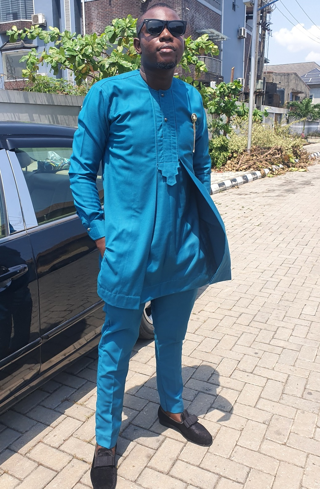

Tribute Page
Engr. Omotola Ogundare
I am a code newbie would you like to show me around

Engineer Omotola, Post B.sc Defense Federal University of technlogy, Minna
Here's an Auto-Biography of Engr. Omotola Ogundare
- 1992- Born in Lagos
- 2002- Finishes Primary School
- 2005- Finishes Junior Secondary School
- 2008- Obtains Wassce
- 2010- Moved to Northern Nigeria for College
- 2015- Graduated From College With B.Eng Electrical/Electronics Engineering
- 2015- Posted to Kaduna For Mandatory Service to Nation; NYSC
- 2016- Became CCNA R/S Certified
- Became IPMP Certified
- Finished NYsc - Returned to Lagos Nigeria - 2017- Started work as a Frontline officer in Access Bank Plc
- 2019- Stopped work as a Frontline officer in Access Bank Plc
- 2019- Started learning to code and picked a new Job as encasher in a Bureau De Change(BDC)
You can download a well detailed Curriculum Vitae by clicking on the link